Working with HomeGenny: from sign-up to salary
For cooks, caretakers and nurses. How to join, get trained, check in at work every day, and see your salary, step by step in the app.
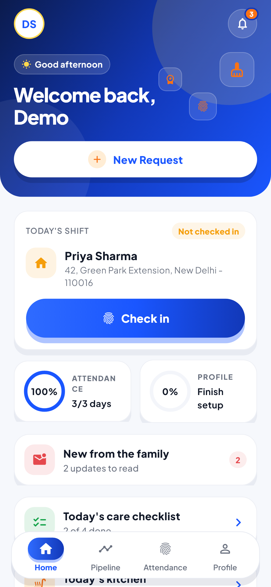
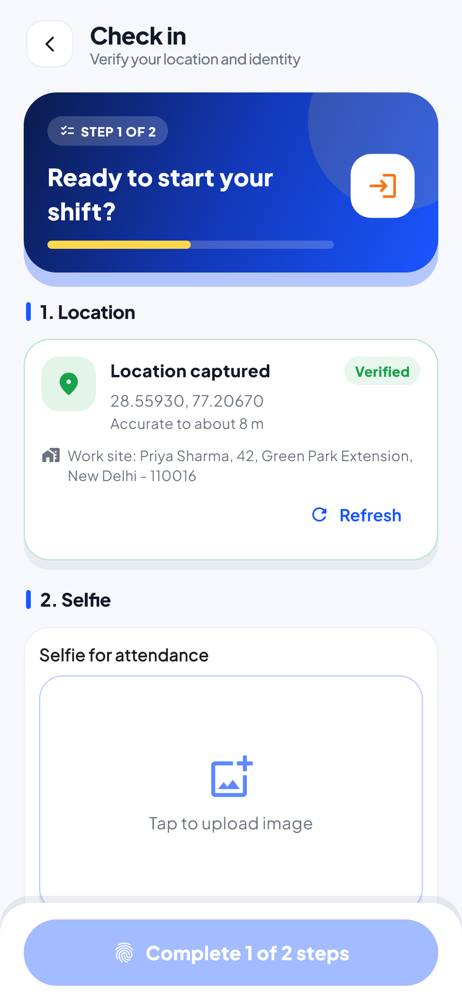
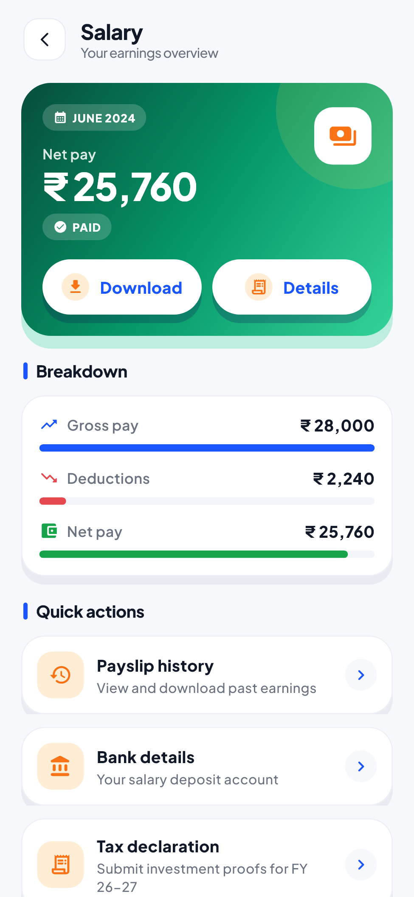
How HomeGenny works for you
HomeGenny gives you steady, long-term work with checked families. Before your first job, you go through a few steps: your documents are checked, you get free training, and you sign your agreement.
Your Relationship Manager (RM) is your HomeGenny contact. Your RM moves you through each step, finds you a family, sets up a short trial, and makes sure you are paid on time. You never have to agree on work or money with the family yourself.
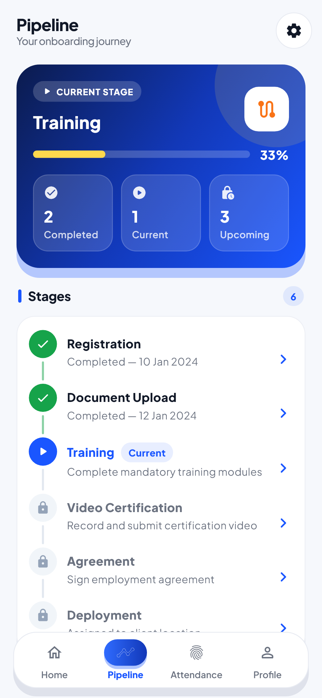
1. JoinDocuments, checks, training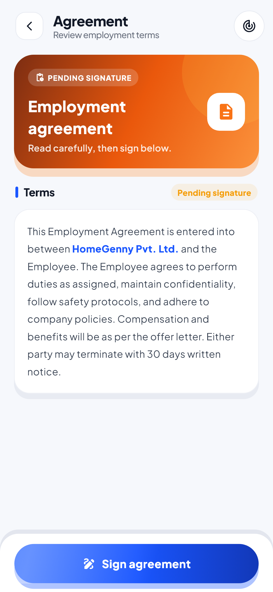
2. SignYour agreement| In this guide | Topic |
|---|---|
| Part 1 | Log in or create your account |
| Part 2 | Your Home screen |
| Part 3 | Getting ready to work: documents, training, agreement |
| Part 4 | Every work day: check in and check out |
| Part 5 | Caretakers: today's care and the daily report |
| Part 6 | Cooks: today's kitchen and ratings |
| Part 7 | Your salary and profile |
| End | Common questions |
1Log in or create your account
You only need your mobile number. There is no password: the app sends a 6-digit code to your phone each time.


1Enter your number and the code
- What to do
- Type your 10-digit mobile number and tap Continue. Then type the 6-digit code from the SMS. The app checks it as soon as you type the last digit.
- No code?
- When the timer finishes, tap Resend.
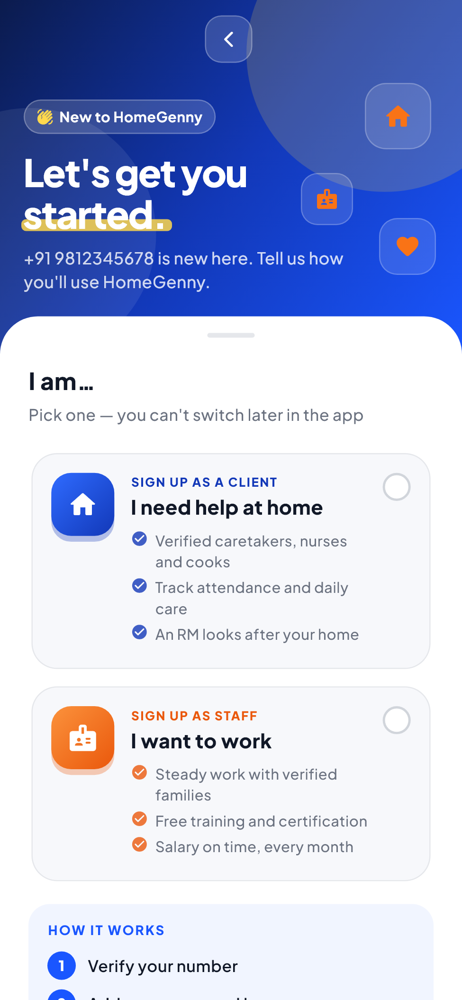
2New here? Choose "I want to work"
- What you see
- Let's get you started with two choices.
- What to do
- Tap I want to work, then Continue as Staff, and type the code again.
- Good to know
- You can't change this choice in the app later. If you picked the wrong one, your RM can fix it.
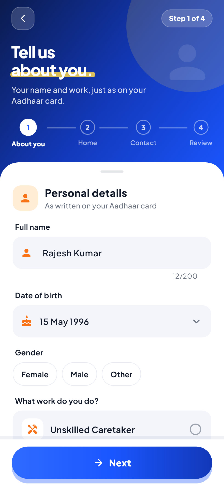
3Tell us about you (4 short steps)
- What to do
-
- About you: your full name and date of birth exactly as on your Aadhaar card, your gender, and the work you do (caretaker, nurse or cook).
- Home: your address, city, area and pincode.
- Contact: someone we can call in an emergency, the languages you speak and your experience.
- Review: check everything and send it.
- What happens next
- A HomeGenny RM accepts your sign-up and becomes your RM. Your RM will call you.
2Your Home screen
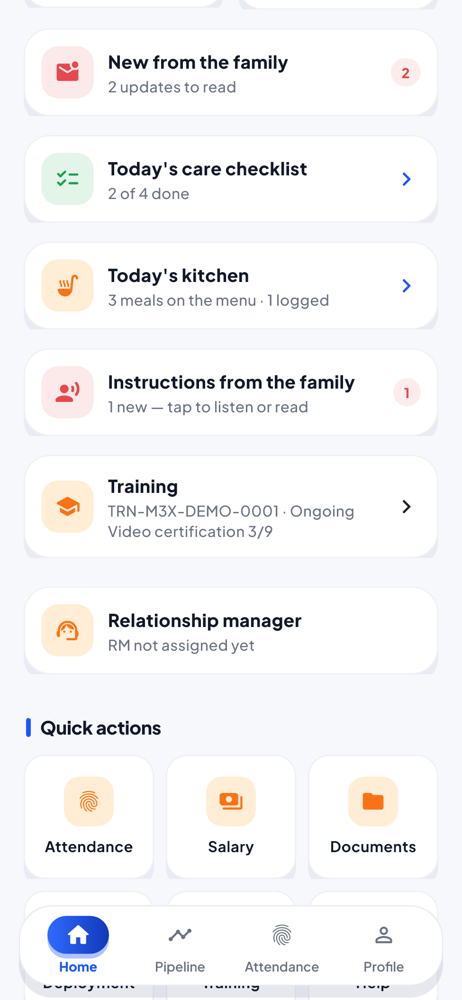
1What's on Home
- Today's shift
- The family you work for, their address, and a big Check in button.
- Cards
- Your attendance, how complete your profile is, New from the family (messages to read), today's care checklist or kitchen, and your training.
- Quick actions
- Attendance, Salary, Documents, Deployment, Training, Help.
- The bottom bar
- Home, Pipeline (your joining steps), Attendance, Profile.
3Getting ready to work
Before your first job, you complete a few steps. Your RM moves you to the next step when each one is done. You can always see where you are in the Pipeline tab.
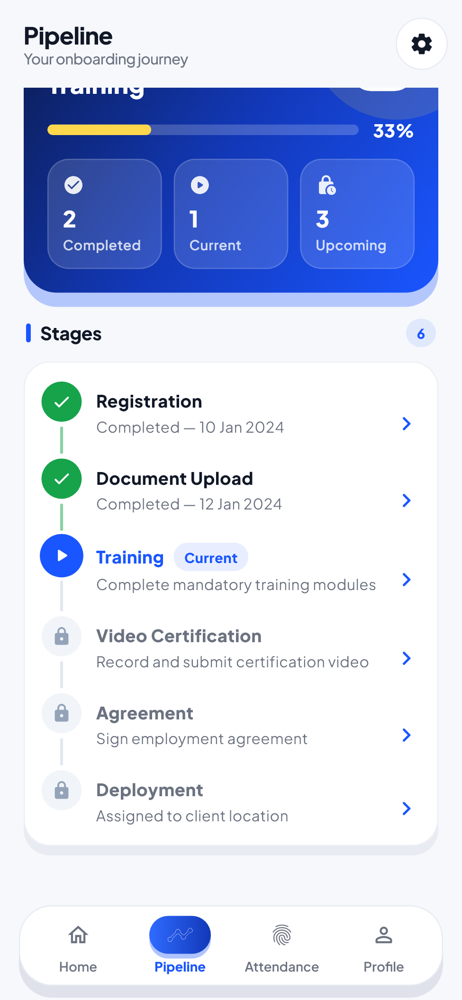
1See your steps (Pipeline tab)
- What you see
- Your current stage at the top and a list of all steps: Registration → Document Upload → Training → Video Certification → Agreement → Deployment. A green tick means done, a blue dot means you are here now, and a lock means it comes later.
- What to do
- Tap your current step to open it.
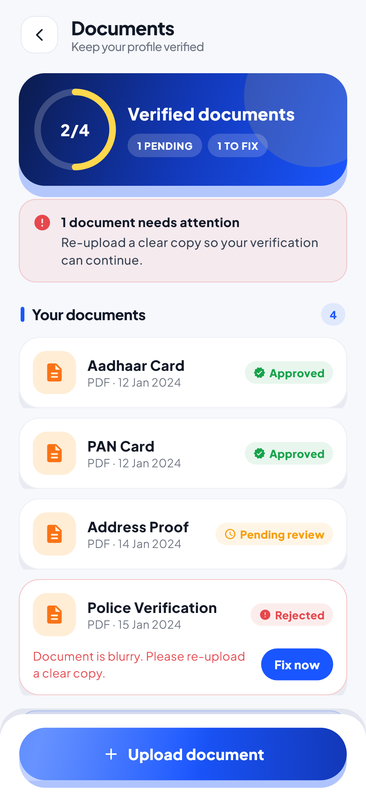
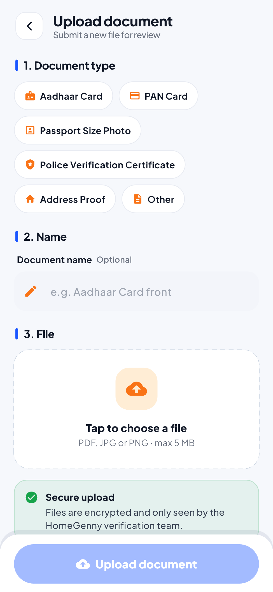
2Upload your documents
- Where
- Home → Documents.
- What to do
- Tap Upload document, choose the type (Aadhaar Card, PAN Card, photo, police certificate, address proof…), tap Tap to choose a file, and tap Upload document.
- If one is rejected
- It shows Rejected and the reason (for example "Document is blurry"). Tap Fix now and upload a clear copy.
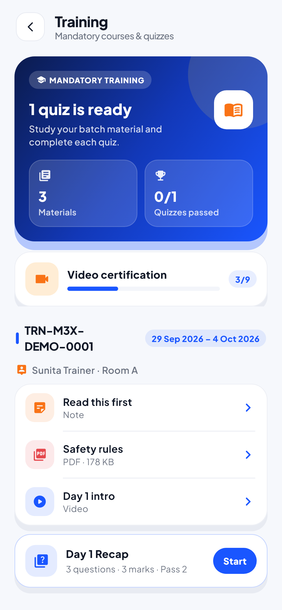
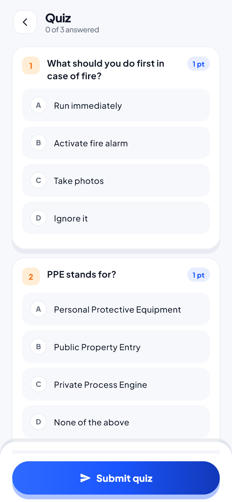
3Free training and quizzes
- Where
- Home → Training.
- What to do
- Open each item (notes, PDFs, videos) and study it. When a quiz is ready, tap Start, choose an answer for each question and tap Submit quiz.
- Good to know
- Your batch, dates and trainer are shown on this page.
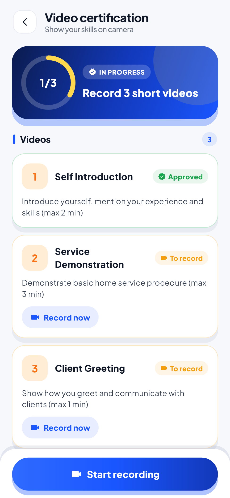
4Record your certificate videos
- What you see
- A short list of videos to record, for example a self-introduction, a demonstration of your work, and how you greet a family.
- What to do
- Tap Record now (or Start recording). Allow the camera, record, watch the preview, then upload it.
- What happens next
- A trainer watches each video and marks it Approved. If one is not approved, you can record it again.
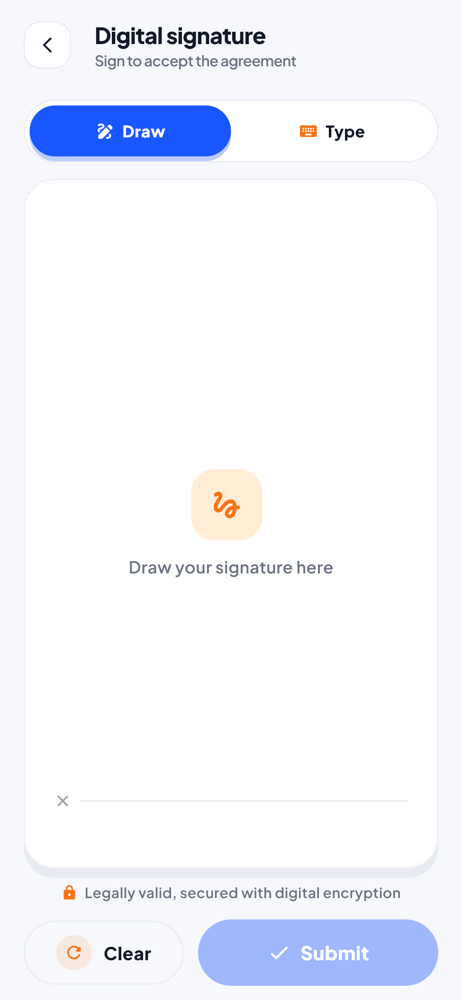
5Read and sign your agreement
- What to do
- Read the Employment agreement carefully and tap Sign agreement. Draw your signature with your finger (or tap Type) and tap Submit. You may also be asked for an e-sign OTP sent to your phone.
- Track it
- Agreement status shows each step: generated, reviewed by your RM, your signature, and activation.
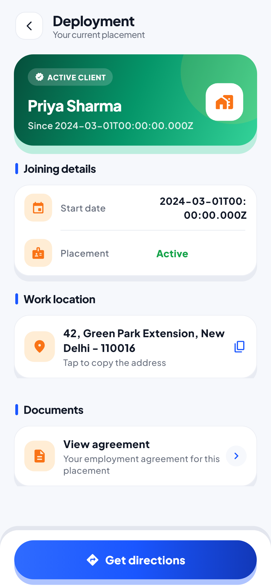
6Your placement (Deployment)
- Where
- Home → Deployment.
- What you see
- The family you will work for, your start date, the work address (tap to copy it) and your agreement.
- What to do
- Tap Get directions to find the home on the map.
- Your first days
- You start with a short trial. When the trial goes well, your RM confirms the job and your salary.
4Every work day: check in and check out
Check in when you reach the family's home and check out when you leave. This is how your attendance, and your salary, is counted.
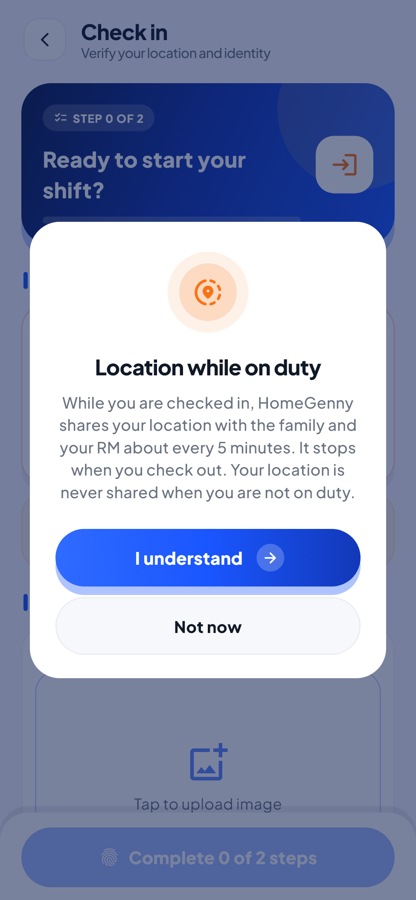
1Check in
- Where
- Tap Check in on Home, or slide Slide to check in on the Attendance tab.
- The first time
- The app explains Location while on duty. Tap I understand and allow location on your phone.
- What to do
-
- 1. Location: wait for Location captured · Verified. If it fails, step closer to the home and tap Refresh.
- 2. Selfie: tap the box and take a clear selfie at the work place.
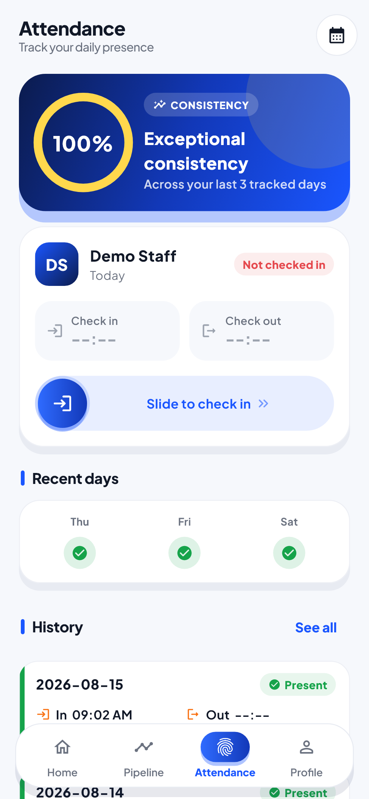
2Check out and see your attendance
- Where
- The Attendance tab.
- What you see
- Today's check-in and check-out times, the last few days, and your attendance rate.
- To check out
- When you finish, open the Attendance tab and use Slide to check out (or tap Check out).
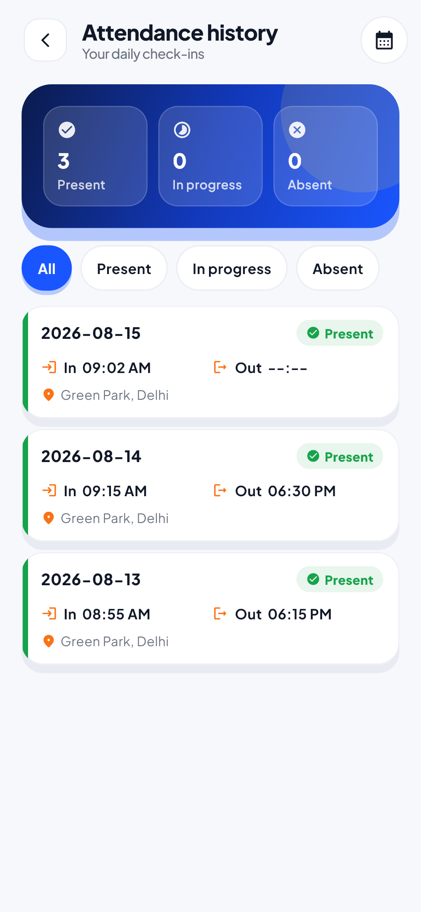
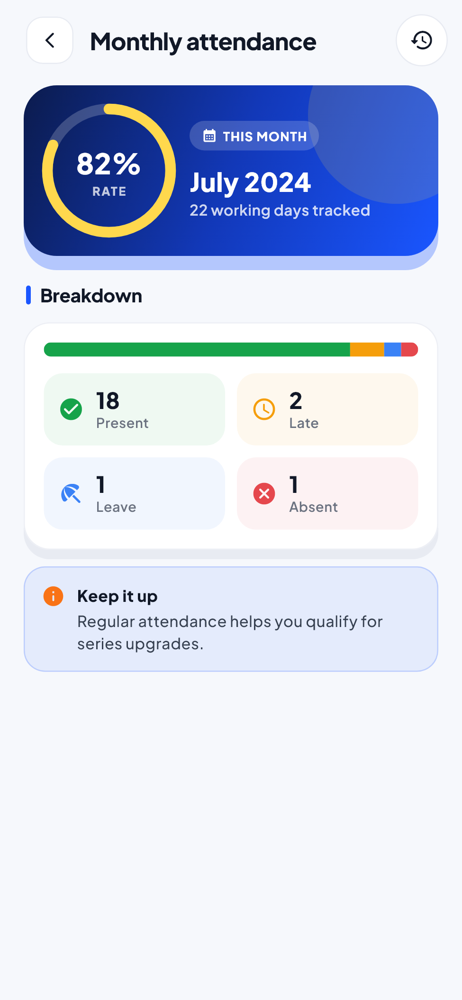
3History and monthly summary
- History
- Every day with your check-in and check-out times and where you checked in. Filter by Present, In progress or Absent.
- Monthly
- Your rate for the month and how many days you were present, late, on leave or absent.
- Why it matters
- Good attendance helps you move up to a higher grade (and higher pay).
5Caretakers: today's care and the daily report
The family writes a care plan: medicines, activities, and dos and don'ts. The app turns it into a checklist for each day.
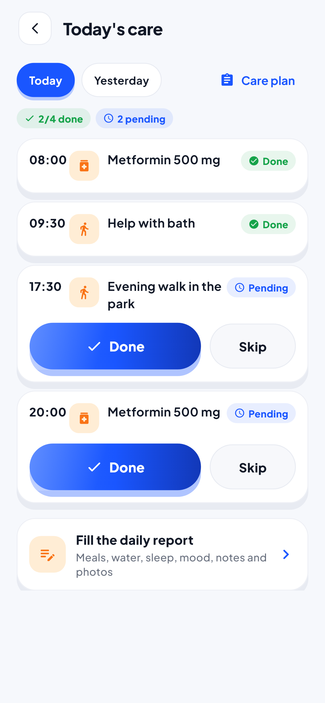
1Today's care checklist
- Where
- Home → Today's care checklist.
- What to do
- For each task at its time, tap Done. If you can't do it, tap Skip and say why. Tap Care plan at the top to read the full plan.
- When the plan changes
- You will be asked to read the new version. The changes are shown to you.
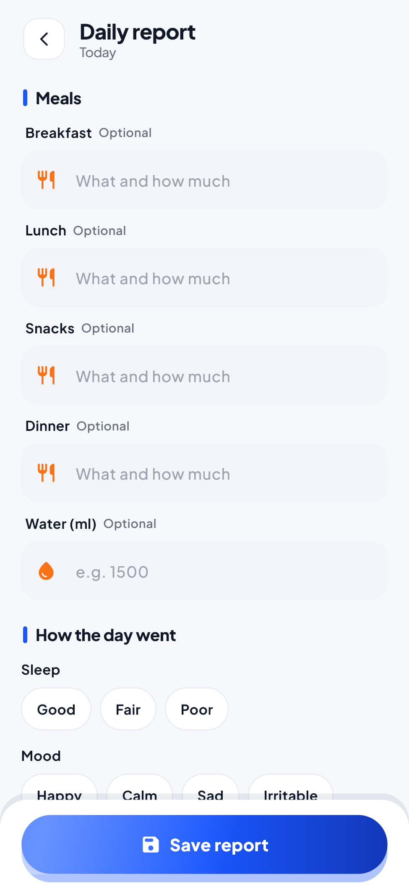
2Fill the daily report
- What to do
- At the end of the day, tap Fill the daily report. Write what the patient ate, how much water they drank, how they slept and their mood, add notes or photos, and tap Save report.
- Who sees it
- The family and your RM.
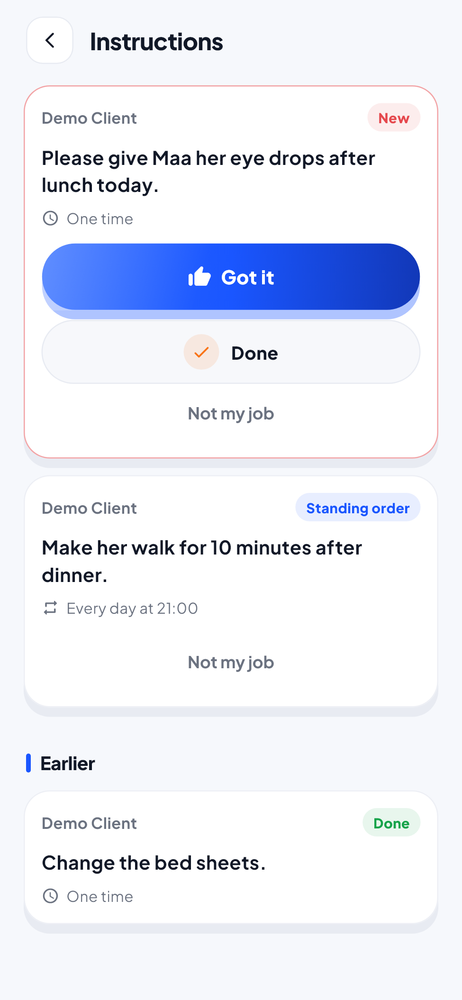
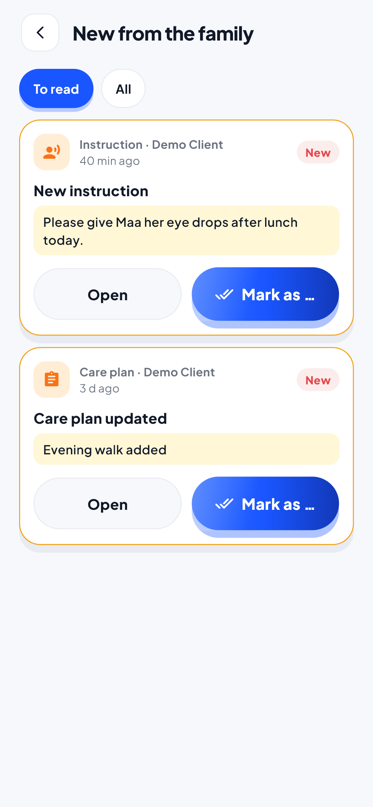
3Instructions from the family
- What to do
- When the family sends an instruction (typed or a voice note), tap Got it so they know you've seen it, and Done when it's finished.
- Not part of your job?
- Tap Not my job. Your RM looks at it and decides. You are protected.
- New from the family
- One list of everything the family changed (instructions, care plan, menu, food profile). Tap Mark as read after reading.
6Cooks: today's kitchen and ratings
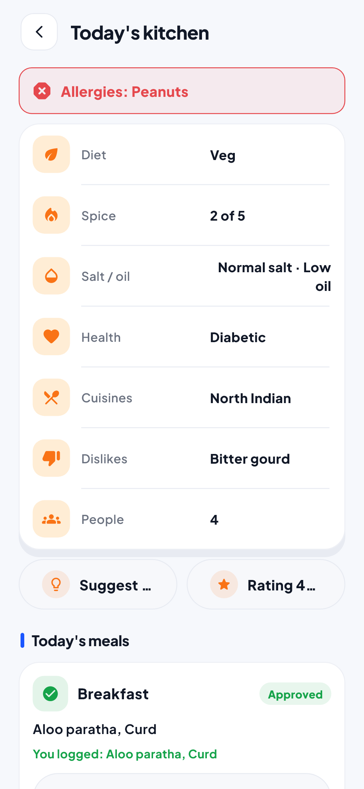
1Today's kitchen
- Where
- Home → Today's kitchen.
- What you see
- The family's food profile first: allergies in red, diet, spice level, salt and oil, health needs, cuisines, dislikes and how many people. Below it, today's meals and the dishes the family approved.
- What to do
- After cooking, tap Log meal (you can add a photo) so the family can see and rate it. To propose dishes, tap Suggest menu. The family approves or declines.
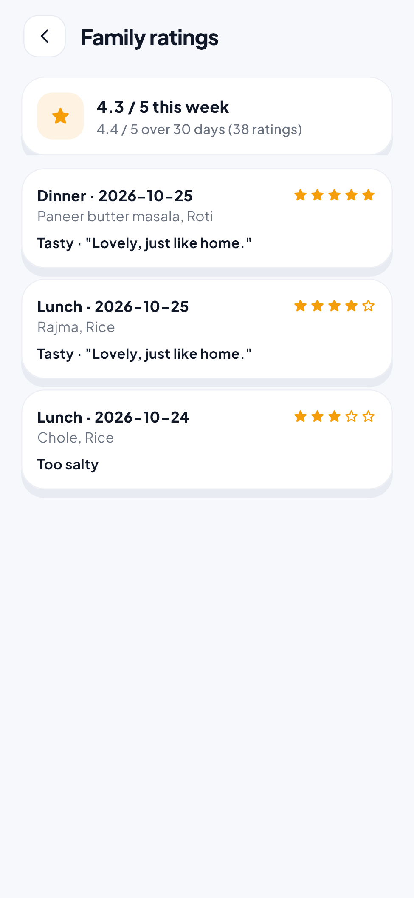
2Family ratings
- What you see
- Your average rating this week and this month, and each meal's stars and comments (for example "Tasty" or "Too salty").
- Use it
- If the same comment comes up again, adjust your cooking. Good ratings help you grow.
7Your salary and profile
HomeGenny pays your salary straight into your bank account every month.
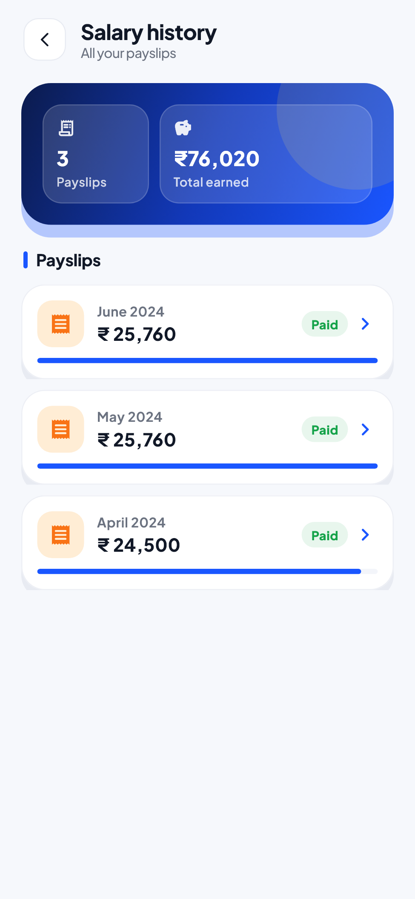
1See your salary and payslips
- Where
- Home → Salary.
- What you see
- This month's net pay (what reaches your bank), with gross pay and deductions. Tap Download for the payslip PDF.
- Older months
- Tap Payslip history. Each month shows Paid when the money has been sent.
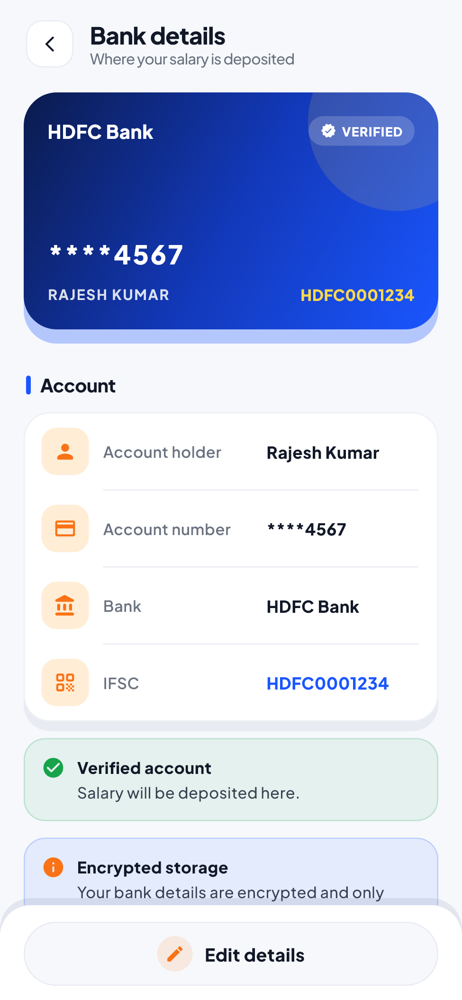
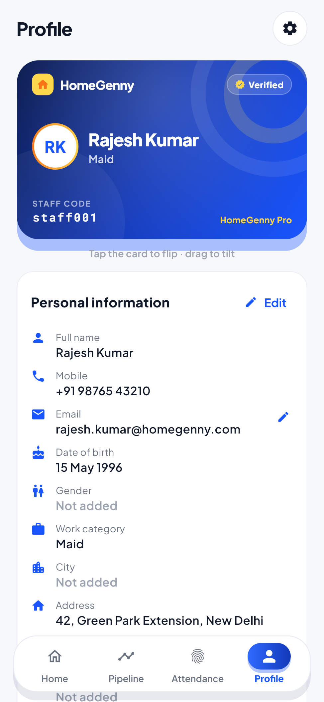
2Bank details and your profile
- Bank details
- Salary → Bank details shows the account your salary goes to. Tap Edit details if it changes. Tax declaration is where you upload investment proofs.
- Profile tab
- Your personal details. Tap Edit to update them. The gear icon opens Settings: language (English or Hindi, हिन्दी), light or dark look, fingerprint login and Help.
Common questions
- Do I need a password?
- No. You log in with your mobile number and a code sent by SMS. You can turn on fingerprint login in Settings.
- Is there a deposit?
- Yes. When you join, you pay your RM a small refundable deposit: ₹1,000 for caretakers and cooks, and ₹1,500 for nurses (skilled caretakers). Your RM explains when you get it back.
- How long does joining take?
- It depends on your documents, checks, training and videos. Your RM moves you to the next step as soon as each one is done. Watch the Pipeline tab.
- Check-in says my location could not be confirmed.
- Turn on location (GPS) on your phone, go close to the home's entrance and tap Refresh. Check-in only works for a job your RM has confirmed.
- The family asked for something that is not my work.
- Tap Not my job on the instruction. Your RM reviews it. You will not be punished for refusing work that is not part of your agreement.
- The app says "Session expired" or "No internet".
- "Session expired" means you need to log in again with your number and a new code. "No internet" means your phone is offline: check Wi-Fi or mobile data.
- Who do I call for help?
- Your RM. You can also open Settings → Help & support to chat, call or email HomeGenny.